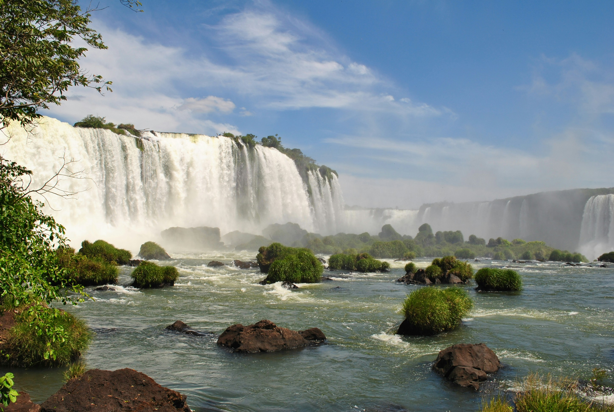
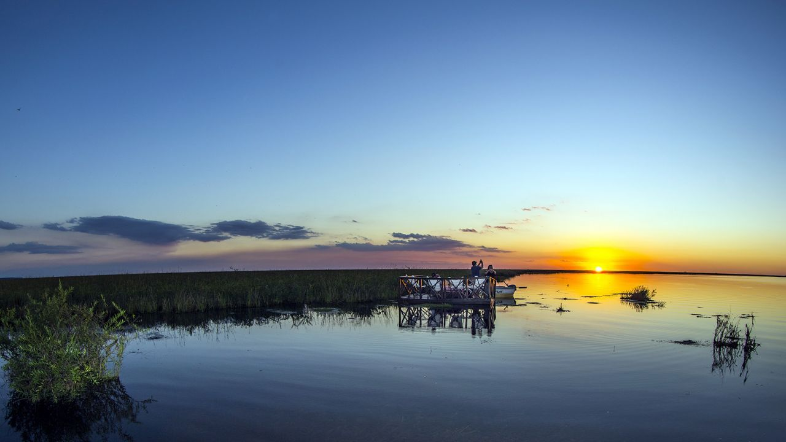
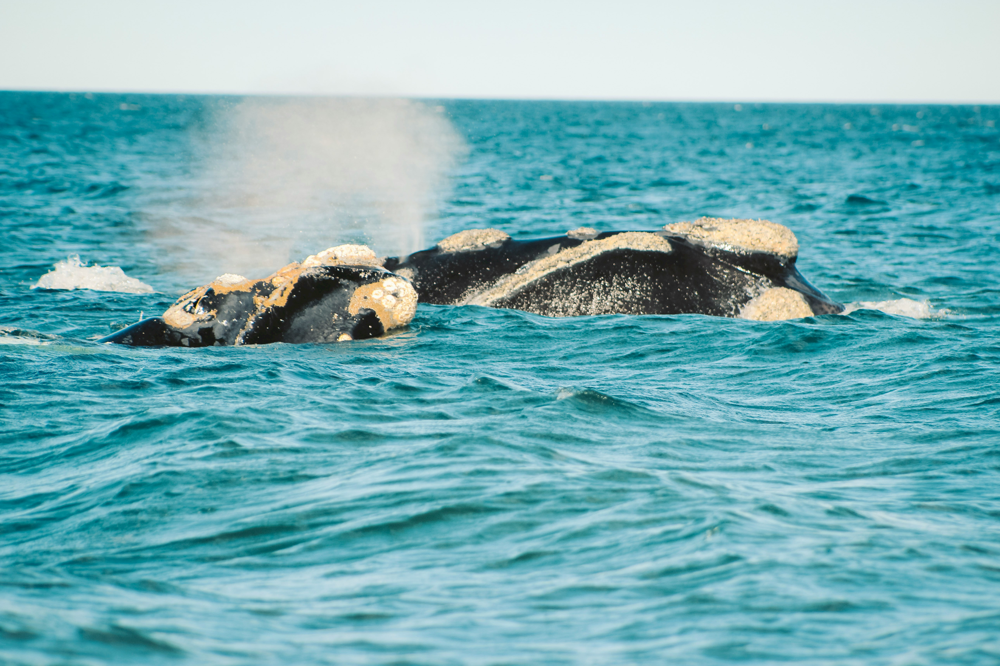

Misiones
Posee una de las 7 maravillas del mundo moderno las "Cataratas del Iguazú".La famosa "Garganta del diablo" tiene unos delos mayores caudales de agua por minuto, con un paisaje rodeado de selva tropical ,su fauna y su flora hacen de este destino un lugar único en el país.

Esteros del Iberá
Dentro de la provincia de Corrientes ,con sus atardeceres mágicos acompañados de la tranquilidad de las aguas de los esteros, hacen de este destino una elección para los aventureros que desean recorrer la más grande biodiversidad por hectárea vista de Argentina.

Puerto Pirámides
Destino de viajeros en busca de un espectaculo único, como es el avistaje de la ballena Franca Austral, hace que durante el año se puedan ver los distintos comportamientos de las ballenas, siendo el pico culminante la reproducción con el nacimiento de los neonatos